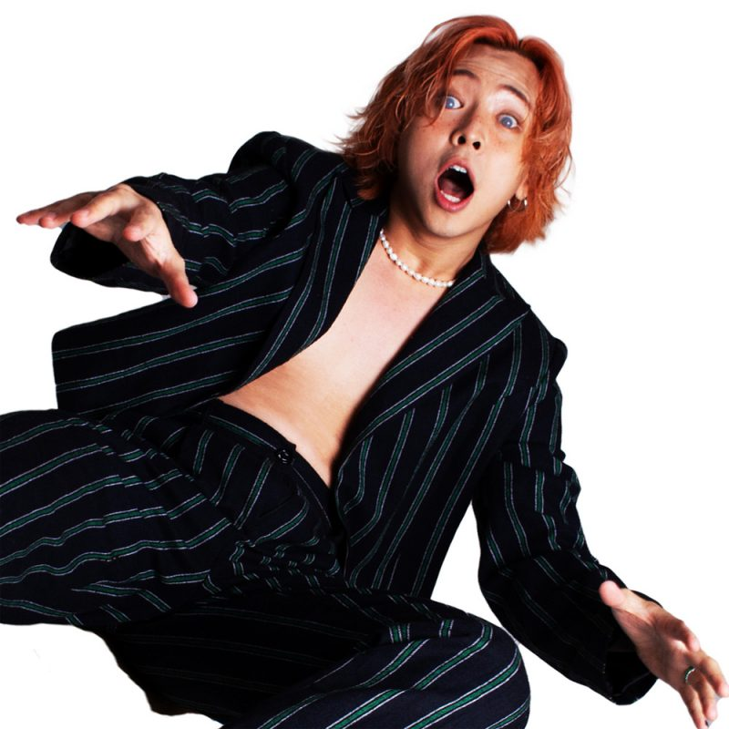

I like artists like Lil Cherry. Most of them try to get rid of the image of Asians, but Lil Cherry's sense of visualization of the image of the East is good because she emphasizes that "I am an Oriental."
Fairy-tale fantasies don't always exist. Everyone has their own fantasies, big and small, even as an adult. Willy Wonka gives dreams and fantasies to children, and it's a story in the movie, so fantasy comes true.